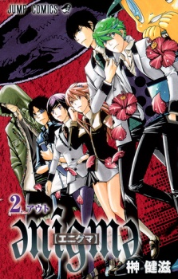

Alternative Names: Enigme; e n i g m a ;Author(s): Sakaki Kenji
Genres: Adventure, Drama, Horror, Mystery, Psychological, Shounen, Supernatural
Release: 2010
Status: Complete
Type: Manga
Length: 7 Volumes 56 Chapters
Read Online @:

More Info @:

Notes
Haiba Sumio has a special ability, sometimes when he falls asleep he sleep writes in his "Dream Diary" and what ever hes drawn/writen will come to pass. So what does he do? He tries to prevent it! But one day he and some of his classmate get traped in the school....on a different dimension??? They are greated by a weird skull with it's jaw bone going the opposite direction and it tells them that if they can get out of the school within 3(?) days they will receive their greatest wish... but how can they get out?